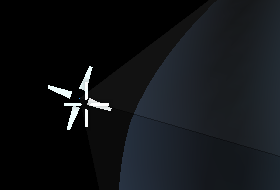

|
S N A P P I N G
In order to create geometry you some time need to match two
edges distance, this is done with the right mouse button. While
creating an edge in one of the three axes and holding down the left
mouse button you press the right mouse button and move the mouse
over to the vertex you want to snap to then release the left
mouse button to create an edge.
If you press the right mouse button while drawing outside
one of the axes the software will choose the axis closest to
where you were drawing. This concept of right mouse button snapping
can be found in a number of places in the application like where
you are moving vertexes or using the transform manipulator.
|
Note: Releasing the right mouse button will cancel the snap,
so be sure to release the left mouse button before the right
when creating the edge.

|
|